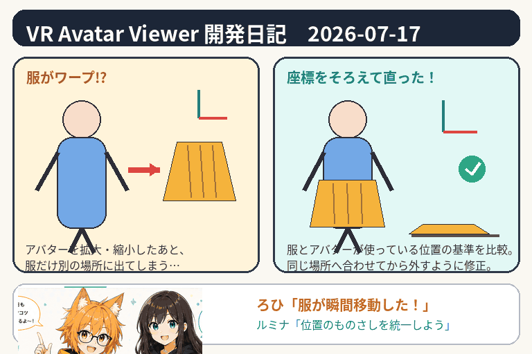

服がワープする日
アバターから服を外した瞬間、服だけが少し離れた場所へ瞬間移動する。今日は、その不思議な現象を追いかけました。

今日の事件：服だけが別の場所へ現れる
VR Avatar Viewerでは、指定した服のパーツをアバターから外し、布のように床へ落とす機能を試作しています。ところが、アバターの大きさを変更したあとに服を外すと、着ていた場所ではなく、少し離れた位置へ表示されることがありました。
ろひ「服を外したぞ」
服「では三歩ほど横へ失礼します」
ルミナ「脱衣に移動演出は頼んでないよ」
原因は「位置を測るものさし」の食い違い
3D空間では、物の場所を「座標」という数字で表します。ただし、その数字には、世界全体を基準にした位置、アバターを基準にした位置、服そのものを基準にした位置など、複数の測り方があります。
今回の服は、アバターに着いている間と、独立した物体になったあとで、別々の基準を使っていました。さらにアバターを拡大・縮小すると、その差まで重なり、服の位置がずれて見えていました。
実物に近い場所を選ぶように変更
修正では、服の形を独立した物体へ変換するとき、候補となる複数の位置計算を比較します。そして、変換前の服が画面上で存在していた場所と、最も近くなる計算方法を選ぶようにしました。
難しく聞こえますが、やっていることは「いくつかのものさしで測り、実物と一番よく合うものを採用する」です。決め打ちで計算するより、アバターごとの階層や大きさの違いへ対応しやすくなります。
床へ落ちたあとの形も保持する
服を外したあとは、床へ落ちて少し広がる演出を行います。これまでは演出が終わると元の服の形へ戻る場合があったため、最後にできた形をメッシュへ焼き付け、落下後の姿を保つ方向でも調整を続けています。
この変形には、布を格子状の補助枠で包み、その枠を動かして形を変える仕組みを使っています。開発内では「Lattice Modifier」と呼んでいますが、読者向けには「格子を使った布の変形」と考えれば十分です。
もう一つの修理：開発環境の再起動
今日は、ローカルの開発支援環境が接続エラーになったとき、安全に再起動するためのスクリプトも追加しました。制作物そのものではありませんが、開発が止まったときに復旧手順を毎回思い出さなくてよくなる、地味に助かる道具です。
今日のまとめ
- アバターを拡大・縮小したあと、外した服がずれる問題を調査
- 複数の位置計算を比較し、元の場所に最も近い結果を選ぶよう改善
- 床へ落ちたあとの服の形を保つ処理を調整中
- 開発支援環境を安全に再起動する道具を追加
本日のひとこと
服がワープしたのではない。こちらが違うものさしで測っていただけだった。
見た目は一瞬の位置ずれでも、原因を追うと、親子関係、拡大率、3D空間の基準といった要素が絡みます。今日は「服を正しい場所で外す」という、ごく自然な動きを実現するために、かなり不自然な量の計算と向き合った一日でした。